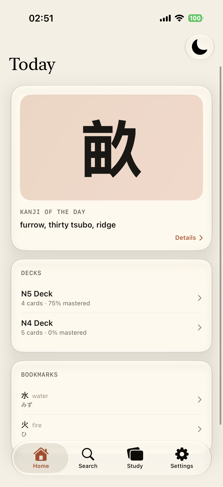
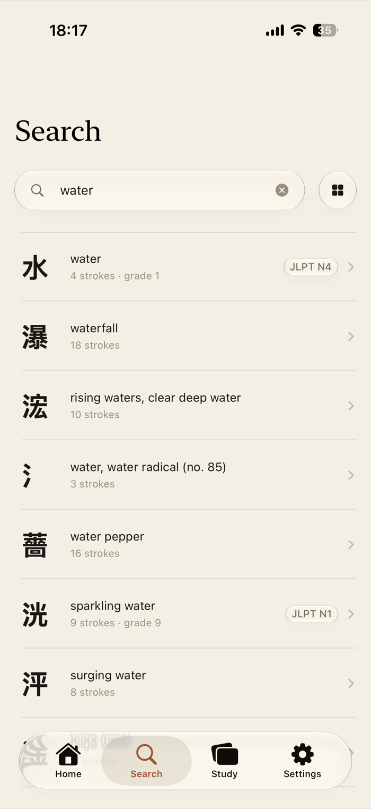
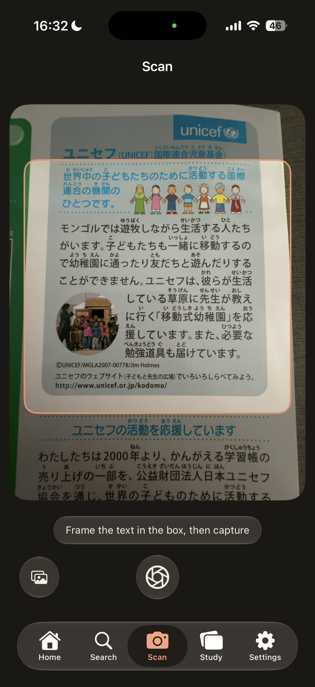
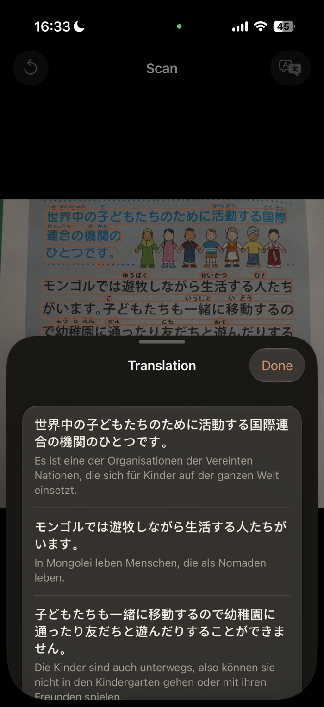
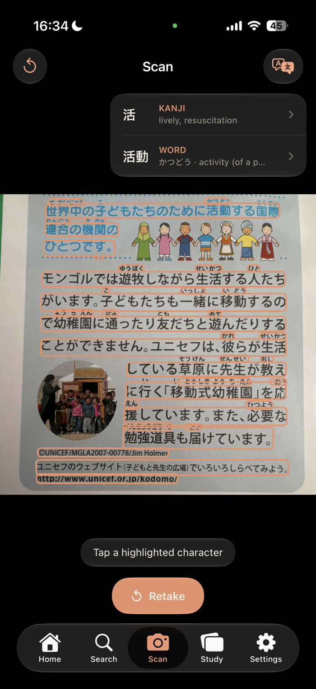
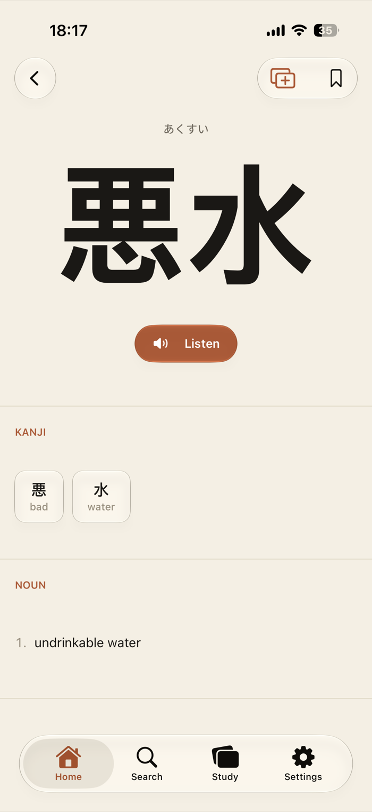
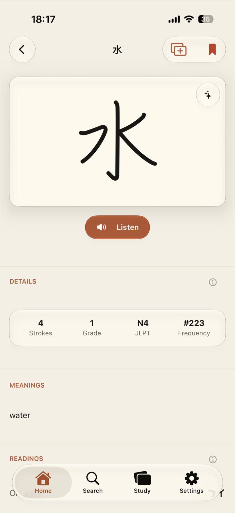
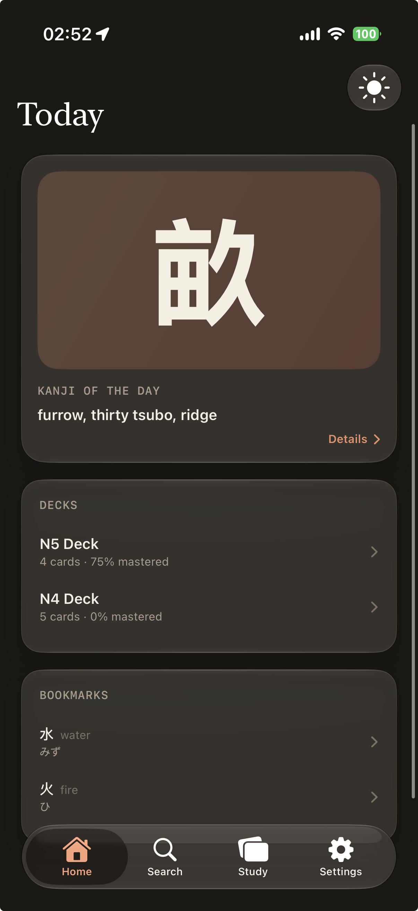

言葉
Kotoba
A Japanese dictionary that feels like a well-made reference book — meanings, readings, real example sentences, animated stroke order, and native audio, fully offline.

Search & Lookup
Instant word and kanji search, real results
Type in kana, kanji, or romaji and get ranked matches straight from the bundled dictionary corpus.

Scan & Translate
Point your camera at any Japanese text
Capture a page, sign, or textbook and Kotoba translates it sentence by sentence — then tap any highlighted word or kanji to see its meaning and readings.



Kanji Detail & Stroke Order
Every kanji, broken down
Readings, meaning, grade, and jōyō status alongside every recorded stroke path.


Study & Review
Spaced repetition that fits your day
Build decks from anything you've looked up, then review on a schedule tuned to what you actually remember.
Tailored insights
Get historical insights for each Kanji
Each kanji, with an overview, its history and origin.
Quiz Mode
Test what you've learned
Multiple-choice and recall quizzes pulled from your own decks.
Write Mode
Trace it to know it
Draw each stroke yourself and get immediate feedback against the kanji's real stroke order.
Light & Dark
Matches the way you read
Every screen, every glass surface, and every ink tone has a considered dark counterpart.
